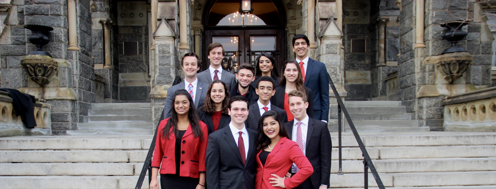
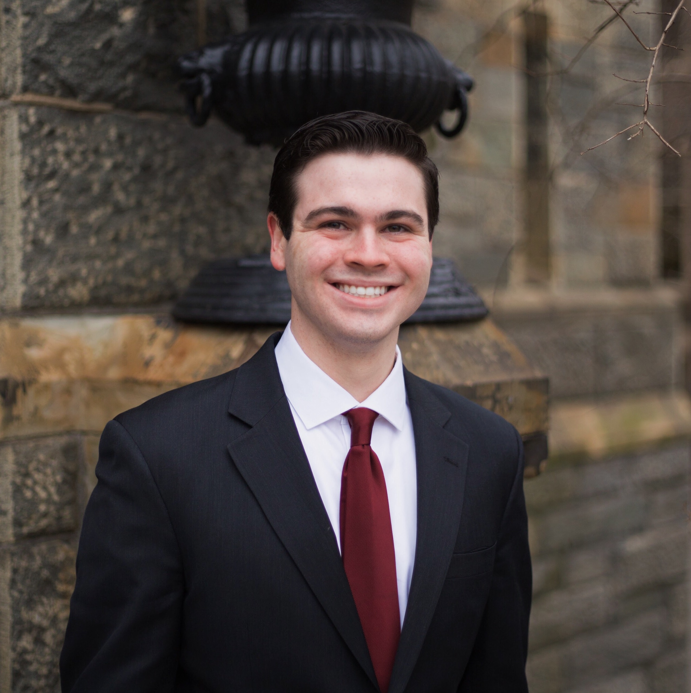
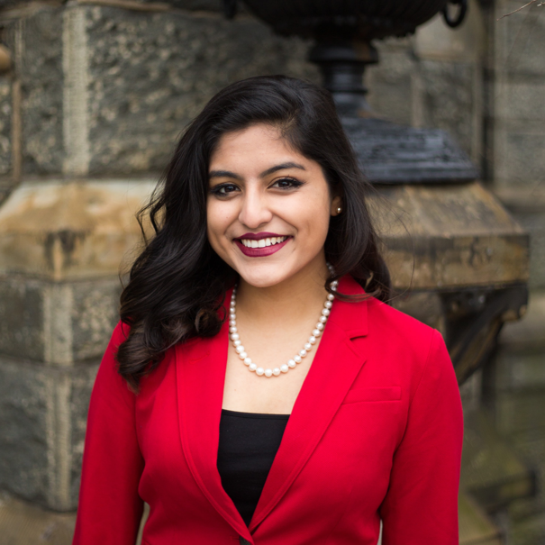

ABOUT AARON
Aaron Bennett is a proud member of Georgetown College’s Class of 2019, studying Political Economy and Theology. After seven years of Speech and Debate, Aaron first got involved in Model UN when he joined the Georgetown team during his first semester on campus, and has hit the ground running. He previously served as Director of Delegate Affairs for NCSC XLIV and Director of Programming for NAIMUN LIV, and is excited to serve as Executive Director of NCSC XLV. Traveling to and staffing conferences, he enjoys the tight-knit community that Model UN fosters both at Georgetown among members of the broader community. Outside of his work with GIRA, Aaron attends as many Hoya basketball games as possible, and is involved with student government and the Institute of Politics.
x
ABOUT NABA
Naba Rahman is a member of the Walsh School of Foreign Service’s Class of 2019, studying Science, Technology and International Affairs with a concentration in Business, Growth, and Development and pursuing a minor in Spanish. Since moving from her hometown Sarasota, Florida to the Hilltop, she has competed extensively for the Georgetown MUN travel team, served as the USG for Cabinets and Boards for NCSC XLIV and the USG for Cabinets for NAIMUN LIV, NCSC’s sister conference. When not bustling around a crisis suite or a committee room, Naba is also involved in the Social Innovation and Public Service Fund, the SFS Century Innovation Program, and Georgetown Collegiate Investors, and serves as a consulting intern at the Department of Commerce. She could not be more excited to welcome delegates to the Nation’s Capitol this October. The staff is hard at work making this the best NCSC yet. Good luck to you all and let the games begin!
x
ABOUT TARA
Tara is a member of the Class of 2019 in the Edmund A. Walsh School of Foreign Service, majoring in International Political Economy with a minor in Mandarin and multitasking. While Tara actually hails from Atlanta, Georgia, she often pretends to be from a small town in France near Normandy and aspires to one day be like CJ Cregg or Elizabeth McCord. Last year, Tara was also a member of the Secretariat for NCSC’s sister conference NAIMUN, in addition to being a Director for the UAR side of the Israel/UAR JCC at NCSC XLIV. She is thrilled to serve as Chief of Staff and can't wait to help make this NCSC the best yet!
x
ABOUT SURAAG
Suraag Srinivas is a member of the Walsh School of Foreign Service’s Class of 2020 and is originally from Chelmsford, Massachusetts, although he spent high school in the middle of nowhere in Indiana. He started doing Model UN during his junior year of high school, and has continued to avidly travel with Georgetown’s team, as well as staffing both NCSC and NAIMUN. While not doing MUN things, Suraag can be found searching for the best study spots, the best smoothies, and exploring Georgetown and DC’s amazing (but expensive) food scene. Suraag is excited to meet everyone this coming October and can’t wait to make the JCCs of NCSC XLV the most interesting and exciting experience for delegates yet!
x
x
ABOUT BILVA
Bilva Chandra is a member of the Class of 2020 in the School of Foreign Service, majoring in International Politics. She competed on the MUN circuit for all four years of high school, was a member of NAIMUN staff, and is beyond excited to be a part of NCSC Senior Staff. Some of her passions include Indian classical dance and extremely spicy food. When she isn't Jersey club dancing, putting chili powder in her Easy Mac, or excessively updating her Spotify playlists, she writes for the Middle East section of The Caravel, is a coordinator on the Hoya Saxa Weekend Planning Committee and travels with the Georgetown Model UN team. She realized that international relations was her passion by competing at MUN conferences in high school and cannot wait for NCSC XLV!
x
ABOUT JAYLAN
Jaylan Smith is a member of Georgetown’s Class of 2020 in the School of Foreign Service, studying international economics with a focus in the Middle East. Any conversation of more than fifteen seconds with Jaylan will reveal that he is from California (and vehemently proud of it) and that he subscribes to a cult of personality around Beyoncé. He never had the opportunity to be involved in Model UN in high school, but when he came to college he fell in love with Georgetown’s program. He travels with the delegation and assists in running conferences Georgetown holds, and is excited to be a part of the club for the next three years. He loves and exploring the nation’s capital and talking about Hamilton with his friends into the very early morning. Jaylan is excited to be your USG and can’t wait to make this the greatest NCSC ever!
ABOUT JEREMY
Jeremy Cohen is a proud member of Georgetown's Walsh School of Foreign Service Class of 2020, and plans to study International History. He calls beautiful Princeton, New Jersey home, and tirelessly defends the Garden State from the constant onslaught of insults hurled at it by overzealous Californians. Jeremy has had a passion for Model UN crisis committees since beginning his participation during his sophomore year of high school, and now enjoys traveling with the Georgetown team. Outside of his Model UN pursuits, he is active in the Figge Fellows, a religious research fellowship. Since living in Yorkshire, Jeremy has been a veritable Anglophile, and as a result can typically be found watching Downton Abbey, preparing tea, or lamenting the often lackluster performance of Leeds United. He also enjoys making crêpes and indulging his passion for board games by playing more Catan than is academically advisable. He looks forward to working to bring you fast paced and exciting crisis committees for what will he's sure will be a brilliant NCSC!
x
x
ABOUT ABBEY
Abbey Nichols is in Georgetown’s Walsh School of Foreign Service, Class of 2020, interested in studying International Economics with a minor in French. Hailing from the snowy winter lands of Minnesota, she enjoys laughing at people who panic when it snows an inch in D.C. Since entering into the world of Model UN at Georgetown, Abbey has served as a Crisis Analyst and Director in two different committees and as an Administrative Assistant for NCSC XLIV, as well as a Rapporteur in DISEC at NAIMUN LIV, and is thrilled to be your Director of Events at NCSC XLV! Outside of Model UN on the Hilltop, Abbey enjoys draining her bank account at the best ice cream shops, watching an alarming amount of The Office and Game of Thrones, and making mem(e)s with her friends.
x
ABOUT AARON
Aaron Baum is a member of the Walsh School of Foreign Service Class of 2020 majoring in Regional and Comparative Studies with a focus on Asia and the United States. Although he dabbled in Model United Nations at his high school in California, he truly fell in love during freshman fall semester at Georgetown after long bus rides with the travel team and snapping pictures of delegates and staffers at NCSC XLIV. When not making up fantasy worlds and pretending to be a grown up, Aaron edits for the Georgetown Journal of International Affairs, recruits clients for the Hilltop Microfinance Initiative, and mentors in the Emerging Leaders Program. But really he just watches Veep and It's Always Sunny in Philadelphia, plays squash, and eats Kraft(TM) Mac-and-Cheese all day.
x
ABOUT XAVIER
Xavier Rivera is a member of the Georgetown College Class of 2020 studying Political Economy and minoring in Computer Science. He hails from Puerto Rico and grew up in Rockville, Maryland, in the DC Metro Area. Besides falling in love with International Relations after his intro class Freshman year, Xavier is passionate about design and entrepreneurship. He currently works at the Beeck Center for Social Impact + Innovation, using his design skills for collaborative reports and convening with MasterCard, The White House, The MacArthur Foundation, and more. He can’t wait to engage students with NCSC through new ways this year. In his free time, he does photography and frequently receives photo creds on Facebook.
x
ABOUT AVERY
Avery League is a member of Georgetown's Class of 2020 in the Walsh School of Foreign Service and is considering a major in Science, Technology, and International Affairs. Born in Atlanta, Georgia, Avery grew up in Huntsville, Alabama and is still learning to mentally cope with the concept of snow. Avery spends her time as a delegate on the Georgetown Model UN Travel Team, a member of Club Rock Climbing (choosing to actively ignore her lack of physical coordination), and a tutor for the D.C. Schools Project. Her chosen forms of procrastination are movies and Broadway shows, and she is a shameless coffee and chocolate addict. Avery is ecstatic to be your Director of Delegate Affairs, and can't wait to welcome you to an incredible NCSC XLV!
x
ABOUT JINIA
Jinia is a Class of 2020 Human Science major at Georgetown’s School of Nursing and Health Studies. She has participated in Model UN since she was a freshman in high school, developing her interest in the role of biology in current international affairs. She has continued this passion in college and began traveling with Georgetown’s team this past spring. When Jinia isn’t struggling with Chemistry, she can be found watching Veep or Snapchat’s Discover Page, exploring DC, or taking a strictly timed nap. She can play clarinet like Squidward does, but she’s much more sociable (or so she likes to think) as she tutors neighboring high schoolers and participates in the United Nations Association at Georgetown. She is extremely excited to serve as your Director of Operations for NCSC XLV!

Our Team

Aaron Bennett
Executive Director
ncsced@modelun.org
ABOUT ME

Naba Rahman
Secretary General
ncscsg@modelun.org
ABOUT ME